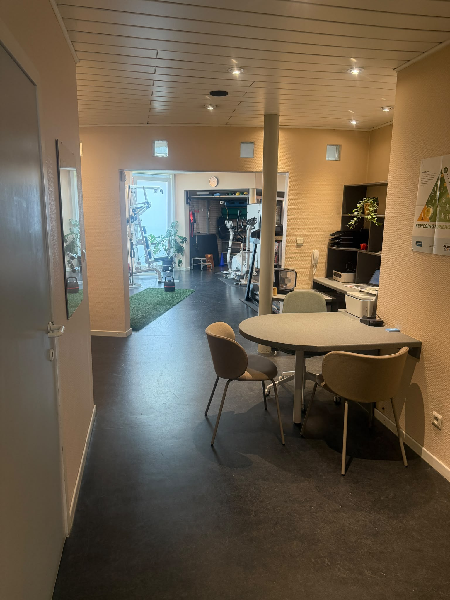

Oefentherapie & Sportkinesitherapie in Gent
Geen voorgedrukte oefenschema's of klakkeloos herhalingen tellen. Wij combineren bewegingsanalyse, pijneducatie en persoonlijke coaching om gedragsverandering en zelfmanagement waar te maken. Zo herwin je het vertrouwen in je eigen lichaam.

Zelfmanagement & autonomie
Leren begrijpen, bewegen en zelf de regie herwinnen.
Waarom actieve oefentherapie zo belangrijk is
Pijn en herstel vragen niet om passieve afhankelijkheid of een vast blaadje met oefeningen. Echte vooruitgang ontstaat wanneer je begrijpt hoe je lichaam reageert op belasting, en leert hoe je jouw bewegingsgedrag en motivatie duurzaam aanpast.
Coaching & educatie in plaats van klakkeloos uitvoeren
Of je nu wilt herstellen van een sportblessure, post-operatief revalideert, of al langere tijd kampt met terugkerende rug- of nekklachten: de essentie van oefentherapie is niet het simpelweg 'uitvoeren van een schema'.
Wij begeleiden je met inzichten over pijn en belastbaarheid, coaching rond motivatie, en praktische strategieën voor zelfmanagement. Zo bouwen we niet alleen fysieke spierkracht op, maar vooral de mentale autonomie en het bewegingsvertrouwen om zelfstandig klachtenvrij te blijven.
"Revalideren gaat niet over klakkeloos oefenschema's afvinken. Het draait om inzicht in je eigen lichaam, duurzame gedragsverandering en de motivatie om zelf de regie over je herstel en beweging te nemen."

Vier pijlers voor duurzaam bewegingsherstel
Sportrevalidatie & peesherstel
Gerichte, progressieve belasting bij achillespees-, patellapees- of hamstringblessures en gewrichtsletsel op maat van jouw sport.
- Progressieve weefselbelasting
- Return to sport krachttesten
Post-operatieve revalidatie
Stapsgewijze begeleiding na operaties (zoals voorste kruisband, meniscus of schouder) gericht op het herwinnen van vertrouwen.
- Individueel opgebouwd herstelplan
- Veilige belasting van het gewricht
Educatie & gedragsverandering
Begrijpen hoe belasting, stress, rust en spierspanning elkaar beïnvloeden, zodat je gewoontes leert doorbreken die klachten onderhouden.
- Pijn- & belastbaarheidsinzicht
- Coaching richting een duurzame en gezonde levensstijl
Zelfmanagement & autonomie
Van afhankelijkheid van een behandelaar naar zelfstandig en vol vertrouwen bewegen, met praktische handvatten voor het dagelijks leven.
- Eigen regie & controle herwinnen
- Preventie van herval op lange termijn
Gespecialiseerde kinesitherapeuten in Gent
Egon Seldeslachts

Mathias Heene
Vragen over oefentherapie & sportkine in Gent
Bij Kine Strop krijg je geen standaard lijstje van oefeningen dat je thuis alleen moet uitzoeken. Wij focussen op educatie, inzicht in jouw specifieke bewegingspatronen en persoonlijke motivatie. Je leert waarom je een oefening doet en hoe je deze aanpast aan je dagelijkse belasting en doelen.
Absoluut niet. De principes van sportkinesitherapie — zoals gerichte krachtopbouw, gewrichtsstabiliteit, weefselbelasting en motiverende coaching — passen we net zo goed toe op alledaagse activiteiten als wandelen, werken of tuinieren.
Ja. Oefentherapie betekent niet dat je door hevige pijn heen moet bijten. We zoeken samen naar jouw actieve tolerantievenster en bouwen de intensiteit stapsgewijs op, zodat je weefsels weer wennen aan belasting zonder dat het zenuwstelsel overprikkeld raakt.
Ja. Oefentherapie en sportrevalidatie maken integraal deel uit van de kinesitherapie. Met een doktersvoorschrift heb je recht op de officiële RIZIV-terugbetaling via je ziekenfonds.